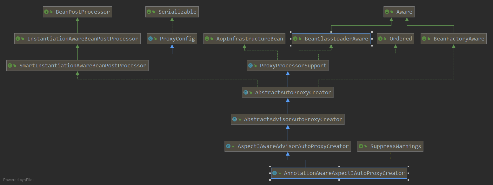
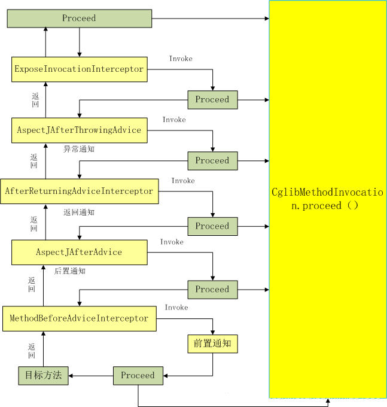

注解式AOP原理
基于注解的方式实现AOP需要在配置类中添加注解@EnableAspectJAutoProxy。我们就先从这个注解看一下Spring实现AOP的过程：
@SpringBootApplication
@EnableAspectJAutoProxy(proxyTargetClass = true, exposeProxy = true)
public class TestApplication {
public static void main(String[] args) {
}
}
@Target(ElementType.TYPE)
@Retention(RetentionPolicy.RUNTIME)
@Documented
@Import(AspectJAutoProxyRegistrar.class)//引入AspectJAutoProxyRegister.class对象
public @interface EnableAspectJAutoProxy {
//true——使用CGLIB基于类创建代理；false——使用java接口创建代理
boolean proxyTargetClass() default false;
//是否通过aop框架暴露该代理对象，aopContext能够访问.
boolean exposeProxy() default false;
}
可以看出@EnableAspectJAutoProxy引入了AspectJAutoProxyRegister.class对象 ，AspectJAutoProxyRegister给容器中注册一个AnnotationAwareAspectJAutoProxyCreator
class AspectJAutoProxyRegistrar implements ImportBeanDefinitionRegistrar {
/**
* Register, escalate, and configure the AspectJ auto proxy creator based on the value
* of the @{@link EnableAspectJAutoProxy#proxyTargetClass()} attribute on the importing
* {@code @Configuration} class.
*/
@Override
public void registerBeanDefinitions(
AnnotationMetadata importingClassMetadata, BeanDefinitionRegistry registry) {
AopConfigUtils.registerAspectJAnnotationAutoProxyCreatorIfNecessary(registry);
AnnotationAttributes enableAspectJAutoProxy =
AnnotationConfigUtils.attributesFor(importingClassMetadata, EnableAspectJAutoProxy.class);
if (enableAspectJAutoProxy != null) {
if (enableAspectJAutoProxy.getBoolean("proxyTargetClass")) {
AopConfigUtils.forceAutoProxyCreatorToUseClassProxying(registry);
}
if (enableAspectJAutoProxy.getBoolean("exposeProxy")) {
AopConfigUtils.forceAutoProxyCreatorToExposeProxy(registry);
}
}
}
}
AopConfigUtils：
@Nullable
public static BeanDefinition registerAspectJAnnotationAutoProxyCreatorIfNecessary(BeanDefinitionRegistry registry) {
return registerAspectJAnnotationAutoProxyCreatorIfNecessary(registry, null);
}
@Nullable
public static BeanDefinition registerAspectJAnnotationAutoProxyCreatorIfNecessary(
BeanDefinitionRegistry registry, @Nullable Object source) {
//给容器中注册一个AnnotationAwareAspectJAutoProxyCreator
return registerOrEscalateApcAsRequired(AnnotationAwareAspectJAutoProxyCreator.class, registry, source);
}
@Nullable
private static BeanDefinition registerOrEscalateApcAsRequired(
Class<?> cls, BeanDefinitionRegistry registry, @Nullable Object source) {
Assert.notNull(registry, "BeanDefinitionRegistry must not be null");
if (registry.containsBeanDefinition(AUTO_PROXY_CREATOR_BEAN_NAME)) {
BeanDefinition apcDefinition = registry.getBeanDefinition(AUTO_PROXY_CREATOR_BEAN_NAME);
if (!cls.getName().equals(apcDefinition.getBeanClassName())) {
int currentPriority = findPriorityForClass(apcDefinition.getBeanClassName());
int requiredPriority = findPriorityForClass(cls);
if (currentPriority < requiredPriority) {
apcDefinition.setBeanClassName(cls.getName());
}
}
return null;
}
//注册AnnotationAwareAspectJAutoProxyCreator，cls = AnnotationAwareAspectJAutoProxyCreator
RootBeanDefinition beanDefinition = new RootBeanDefinition(cls);
beanDefinition.setSource(source);
beanDefinition.getPropertyValues().add("order", Ordered.HIGHEST_PRECEDENCE);
beanDefinition.setRole(BeanDefinition.ROLE_INFRASTRUCTURE);
//将beanDefinition注册进registry中,注册名为 AUTO_PROXY_CREATOR_BEAN_NAME
//AUTO_PROXY_CREATOR_BEAN_NAME = internalAutoProxyCreato
registry.registerBeanDefinition(AUTO_PROXY_CREATOR_BEAN_NAME, beanDefinition);
return beanDefinition;
}
AnnotationAwareAspectJAutoProxyCreator 的层次结构：

这里主要关注后置处理器和自动装备BeanFactory相关的方法：SmartInstantiationAwareBeanPostProcessor(后置处理器), BeanFactoryAware(自动装配BeanFactory)
AnnotationAwareAspectJAutoProxyCreator的注册流程
一切回归到refresh()方法
public void refresh() throws BeansException, IllegalStateException {
synchronized (this.startupShutdownMonitor) {
// Prepare this context for refreshing.
prepareRefresh();
// Tell the subclass to refresh the internal bean factory.
ConfigurableListableBeanFactory beanFactory = obtainFreshBeanFactory();
// Prepare the bean factory for use in this context.
prepareBeanFactory(beanFactory);
try {
// Allows post-processing of the bean factory in context subclasses.
postProcessBeanFactory(beanFactory);
// Invoke factory processors registered as beans in the context.
invokeBeanFactoryPostProcessors(beanFactory);
// 注册后置处理器，用于拦截bean的创建
registerBeanPostProcessors(beanFactory);
// Initialize message source for this context.
initMessageSource();
// Initialize event multicaster for this context.
initApplicationEventMulticaster();
// Initialize other special beans in specific context subclasses.
onRefresh();
// Check for listener beans and register them.
registerListeners();
// Instantiate all remaining (non-lazy-init) singletons.
finishBeanFactoryInitialization(beanFactory);
// Last step: publish corresponding event.
finishRefresh();
}
catch (BeansException ex) {
if (logger.isWarnEnabled()) {
logger.warn("Exception encountered during context initialization - " +
"cancelling refresh attempt: " + ex);
}
// Destroy already created singletons to avoid dangling resources.
destroyBeans();
// Reset 'active' flag.
cancelRefresh(ex);
// Propagate exception to caller.
throw ex;
}
finally {
// Reset common introspection caches in Spring's core, since we
// might not ever need metadata for singleton beans anymore...
resetCommonCaches();
}
}
}
refresh()方法调用了一个方法 registerBeanPostProcessors(beanFactory)，注册后置处理器，用于拦截bean的创建。 也是在这个方法中完成了AnnotationAwareAspectJAutoProxyCreator的注册。 该方法的主要逻辑在PostProcessorRegistrationDelegate类中的registerBeanPostProcessors方法中：
public static void registerBeanPostProcessors(
ConfigurableListableBeanFactory beanFactory, AbstractApplicationContext applicationContext) {
//获取ioc容器已经定义了的需要创建对象的所有BeanPostProcessor
String[] postProcessorNames = beanFactory.getBeanNamesForType(BeanPostProcessor.class, true, false);
// 注册BeanPostProcessorChecker,当bean在BeanPostProcessor实例化过程中被创建时
//即当一个bean没有资格被所有BeanPostProcessor处理时，它记录一条信息消息。
int beanProcessorTargetCount = beanFactory.getBeanPostProcessorCount() + 1 + postProcessorNames.length;
beanFactory.addBeanPostProcessor(new BeanPostProcessorChecker(beanFactory, beanProcessorTargetCount));
// BeanPostProcessors 根据优先级进行分离，实现PriorityOrdered接口、实现Ordered接口、未实现优先级接口
List<BeanPostProcessor> priorityOrderedPostProcessors = new ArrayList<BeanPostProcessor>();
List<BeanPostProcessor> internalPostProcessors = new ArrayList<BeanPostProcessor>();
List<String> orderedPostProcessorNames = new ArrayList<String>();
List<String> nonOrderedPostProcessorNames = new ArrayList<String>();
for (String ppName : postProcessorNames) {
if (beanFactory.isTypeMatch(ppName, PriorityOrdered.class)) {
BeanPostProcessor pp = beanFactory.getBean(ppName, BeanPostProcessor.class);
priorityOrderedPostProcessors.add(pp);
if (pp instanceof MergedBeanDefinitionPostProcessor) {
internalPostProcessors.add(pp);//内部beanpostprocessor
}
}
else if (beanFactory.isTypeMatch(ppName, Ordered.class)) {
orderedPostProcessorNames.add(ppName);
}
else {
nonOrderedPostProcessorNames.add(ppName);
}
}
//先注册实现PriorityOrdered接口的 BeanPostProcessors
sortPostProcessors(priorityOrderedPostProcessors, beanFactory);
registerBeanPostProcessors(beanFactory, priorityOrderedPostProcessors);
//再注册实现Ordered接口的 BeanPostProcessors
List<BeanPostProcessor> orderedPostProcessors = new ArrayList<BeanPostProcessor>();
for (String ppName : orderedPostProcessorNames) {
BeanPostProcessor pp = beanFactory.getBean(ppName, BeanPostProcessor.class);
orderedPostProcessors.add(pp);
if (pp instanceof MergedBeanDefinitionPostProcessor) {
internalPostProcessors.add(pp);
}
}
sortPostProcessors(orderedPostProcessors, beanFactory); //按照优先级排序
registerBeanPostProcessors(beanFactory, orderedPostProcessors); //注册
//这里注册所有常规的beanpostprocessor
List<BeanPostProcessor> nonOrderedPostProcessors = new ArrayList<BeanPostProcessor>();
for (String ppName : nonOrderedPostProcessorNames) {
BeanPostProcessor pp = beanFactory.getBean(ppName, BeanPostProcessor.class);
nonOrderedPostProcessors.add(pp);
if (pp instanceof MergedBeanDefinitionPostProcessor) {
internalPostProcessors.add(pp);
}
}
registerBeanPostProcessors(beanFactory, nonOrderedPostProcessors);
// 最后，重新注册所有内部beanpostprocessor。
sortPostProcessors(internalPostProcessors, beanFactory);
registerBeanPostProcessors(beanFactory, internalPostProcessors);
// Re-register post-processor for detecting inner beans as ApplicationListeners,
// moving it to the end of the processor chain (for picking up proxies etc).
beanFactory.addBeanPostProcessor(new ApplicationListenerDetector(applicationContext));
}
registerBeanPostProcessors中注册BeanPostProcessor的顺序是：
- 注册实现了PriorityOrdered接口的BeanPostProcessor
- 注册实现了Ordered接口的BeanPostProcessor
- 注册常规的BeanPostProcessor ，也就是没有实现优先级接口的BeanPostProcessor
- 注册Spring内部BeanPostProcessor
registerBeanPostProcessors方法中注册了所有的BeanPostProcessor，所以AnnotationAwareAspectJAutoProxyCreator也在这里注册完成。 而从AnnotationAwareAspectJAutoProxyCreator类的层次接口可以看出，该类实现了Ordered接口。 所以它是在注册实现Ordered接口的BeanPostProcessor是完成注册：
BeanPostProcessor pp = beanFactory.getBean(ppName, BeanPostProcessor.class)；
这里调用的是AbstractBeanFactory的getBean方法，但是它实际的业务逻辑在AbstractAutowireCapableBeanFactory的doGetBean方法中实现：
protected Object doCreateBean(final String beanName, final RootBeanDefinition mbd, final Object[] args)
throws BeanCreationException {
//实例化bean.
BeanWrapper instanceWrapper = null;
if (mbd.isSingleton()) {
instanceWrapper = this.factoryBeanInstanceCache.remove(beanName);
}
if (instanceWrapper == null) {
instanceWrapper = createBeanInstance(beanName, mbd, args); //创建bean实例
}
final Object bean = (instanceWrapper != null ? instanceWrapper.getWrappedInstance() : null);
Class<?> beanType = (instanceWrapper != null ? instanceWrapper.getWrappedClass() : null);
mbd.resolvedTargetType = beanType;
// 允许post-processors修改合并的bean定义。
synchronized (mbd.postProcessingLock) {
if (!mbd.postProcessed) {
try {
applyMergedBeanDefinitionPostProcessors(mbd, beanType, beanName);
}
catch (Throwable ex) {
throw new BeanCreationException(mbd.getResourceDescription(), beanName,
"Post-processing of merged bean definition failed", ex);
}
mbd.postProcessed = true;
}
}
// Eagerly cache singletons to be able to resolve circular references
// even when triggered by lifecycle interfaces like BeanFactoryAware.
boolean earlySingletonExposure = (mbd.isSingleton() && this.allowCircularReferences &&
isSingletonCurrentlyInCreation(beanName));
if (earlySingletonExposure) {
if (logger.isDebugEnabled()) {
logger.debug("Eagerly caching bean '" + beanName +
"' to allow for resolving potential circular references");
}
addSingletonFactory(beanName, new ObjectFactory<Object>() {
@Override
public Object getObject() throws BeansException {
return getEarlyBeanReference(beanName, mbd, bean);
}
});
}
//初始化bean实例
Object exposedObject = bean;
try {
populateBean(beanName, mbd, instanceWrapper); //给bean的各种属性赋值
if (exposedObject != null) {
//初始化bean
exposedObject = initializeBean(beanName, exposedObject, mbd);
}
}
catch (Throwable ex) {
if (ex instanceof BeanCreationException && beanName.equals(((BeanCreationException) ex).getBeanName())) {
throw (BeanCreationException) ex;
}
else {
throw new BeanCreationException(
mbd.getResourceDescription(), beanName, "Initialization of bean failed", ex);
}
}
if (earlySingletonExposure) {
Object earlySingletonReference = getSingleton(beanName, false);
if (earlySingletonReference != null) {
if (exposedObject == bean) {
exposedObject = earlySingletonReference;
}
else if (!this.allowRawInjectionDespiteWrapping && hasDependentBean(beanName)) {
String[] dependentBeans = getDependentBeans(beanName);
Set<String> actualDependentBeans = new LinkedHashSet<String>(dependentBeans.length);
for (String dependentBean : dependentBeans) {
if (!removeSingletonIfCreatedForTypeCheckOnly(dependentBean)) {
actualDependentBeans.add(dependentBean);
}
}
if (!actualDependentBeans.isEmpty()) {
throw new BeanCurrentlyInCreationException(beanName,
"Bean with name '" + beanName + "' has been injected into other beans [" +
StringUtils.collectionToCommaDelimitedString(actualDependentBeans) +
"] in its raw version as part of a circular reference, but has eventually been " +
"wrapped. This means that said other beans do not use the final version of the " +
"bean. This is often the result of over-eager type matching - consider using " +
"'getBeanNamesOfType' with the 'allowEagerInit' flag turned off, for example.");
}
}
}
}
// Register bean as disposable.
try {
registerDisposableBeanIfNecessary(beanName, bean, mbd);
}
catch (BeanDefinitionValidationException ex) {
throw new BeanCreationException(
mbd.getResourceDescription(), beanName, "Invalid destruction signature", ex);
}
return exposedObject;
}
doGetBean中的逻辑看上去很复杂，但实际上他只做了三件事：
- 创建bean ：createBeanInstance(beanName, mbd, args)
- 给bean中的属性赋值：populateBean(beanName, mbd, instanceWrapper)
- 初始化bean：initializeBean(beanName, exposedObject, mbd)
初始化bean时，initializeBean方法会调用BeanPostProcessor和BeanFactory以及Aware接口的相关方法。 这也是BeanPostProcessor如何发挥初始化bean的原理。
AbstractAutowireCapableBeanFactory的initializeBean方法：
protected Object initializeBean(final String beanName, final Object bean, RootBeanDefinition mbd) {
if (System.getSecurityManager() != null) {
AccessController.doPrivileged(new PrivilegedAction<Object>() {
@Override
public Object run() {
invokeAwareMethods(beanName, bean);
return null;
}
}, getAccessControlContext());
}
else {
invokeAwareMethods(beanName, bean); //处理Aware接口的方法回调
}
Object wrappedBean = bean;
if (mbd == null || !mbd.isSynthetic()) {
// 应用后置处理器的postProcessBeforeInitialization方法
wrappedBean = applyBeanPostProcessorsBeforeInitialization(wrappedBean, beanName);
}
try {
invokeInitMethods(beanName, wrappedBean, mbd); //执行自定义的初始化方法
}
catch (Throwable ex) {
throw new BeanCreationException(
(mbd != null ? mbd.getResourceDescription() : null),
beanName, "Invocation of init method failed", ex);
}
if (mbd == null || !mbd.isSynthetic()) {
// 执行后置处理器的postProcessAfterInitialization方法
wrappedBean = applyBeanPostProcessorsAfterInitialization(wrappedBean, beanName);
}
return wrappedBean;
}
可以看出initializeBean方法主要做了四件事：
- 处理Aware接口的方法回调：invokeAwareMethods(beanName, bean);
- 应用后置处理器的postProcessBeforeInitialization方法： wrappedBean=applyBeanPostProcessorsBeforeInitialization(wrappedBean, beanName);
- 执行自定义的初始化方法：invokeInitMethods(beanName, wrappedBean, mbd);
- 执行后置处理器的postProcessAfterInitialization方法：
wrappedBean=applyBeanPostProcessorsAfterInitialization(wrappedBean, beanName);
initializeBean方法执行成功，AnnotationAwareAspectJAutoProxyCreator注册和初始化成功。
这时再回到第3步中，BeanPostProcessor pp = beanFactory.getBean(ppName, BeanPostProcessor.class)执行成功，目标bean成功注册后，将注册完成的beanPostProcessor，排序后注册到BeanFactory中
sortPostProcessors(orderedPostProcessors, beanFactory); //按照优先级排序
registerBeanPostProcessors(beanFactory, orderedPostProcessors); //注册
private static void registerBeanPostProcessors(
ConfigurableListableBeanFactory beanFactory, List<BeanPostProcessor> postProcessors) {
for (BeanPostProcessor postProcessor : postProcessors) {
beanFactory.addBeanPostProcessor(postProcessor);
}
}
AnnotationAwareAspectJAutoProxyCreator调用时机：
refresh()方法中，调用registerBeanPostProcessors(beanFactory)方法，注册完BeanPostProcessor后，还调用了方法finishBeanFactoryInitialization(beanFactory) ，完成BeanFactory初始化工作，并创建剩下的单实例bean。finishBeanFactoryInitialization(beanFactory)的执行过程：
preInstantiateSingletons调用getBean方法，获取bean实例，执行过程getBean->doGetBean()->getSingleton()->createBean()
这里要说一下createBean中的 resolveBeforeInstantiation(beanName, mbdToUse)方法： 让beanpostprocessor有机会返回代理而不是目标bean实例
try {
// 让beanpostprocessor有机会返回代理而不是目标bean实例。
Object bean = resolveBeforeInstantiation(beanName, mbdToUse);
if (bean != null) {
return bean;
}
}
protected Object resolveBeforeInstantiation(String beanName, RootBeanDefinition mbd) {
Object bean = null;
if (!Boolean.FALSE.equals(mbd.beforeInstantiationResolved)) {
// 确保此时bean类已经被解析。
if (!mbd.isSynthetic() && hasInstantiationAwareBeanPostProcessors()) {
Class<?> targetType = determineTargetType(beanName, mbd);
if (targetType != null) {
//拿到所有后置处理器，如果是InstantiationAwareBeanPostProcessor，就执行postProcessBeforeInstantiation
bean = applyBeanPostProcessorsBeforeInstantiation(targetType, beanName);
if (bean != null) {
bean = applyBeanPostProcessorsAfterInitialization(bean, beanName);
}
}
}
mbd.beforeInstantiationResolved = (bean != null);
}
return bean;
}
主要看一下resolveBeforeInstantiation方法中的applyBeanPostProcessorsBeforeInstantiation 和 applyBeanPostProcessorsAfterInitialization方法，注意两个方法的后缀不同Instantiation(实例化) 和 Initialization(初始化)
protected Object applyBeanPostProcessorsBeforeInstantiation(Class<?> beanClass, String beanName) {
for (BeanPostProcessor bp : getBeanPostProcessors()) { //遍历所有BeanPostProcessor
if (bp instanceof InstantiationAwareBeanPostProcessor) { //如果是InstantiationAwareBeanPostProcessor类型
InstantiationAwareBeanPostProcessor ibp = (InstantiationAwareBeanPostProcessor) bp;
//执行postProcessBeforeInstantiation方法
Object result = ibp.postProcessBeforeInstantiation(beanClass, beanName);
if (result != null) {
return result;
}
}
}
return null;
}
postProcessBeforeInstantiation方法是InstantiationAwareBeanPostProcessor接口中定义的方法，applyBeanPostProcessorsAfterInitialization方法会调用BeanPostProcessor接口中postProcessAfterInitialization方法。 而且InstantiationAwareBeanPostProcessor是在创建Bean实例之前先尝试用后置处理器返回对象的；BeanPostProcessor是在Bean对象创建完成初始化前后调用的。从AnnotationAwareAspectJAutoProxyCreator类的层次结构可以看出，该类实现了InstantiationAwareBeanPostProcessor接口，它会在所有bean实例创建前进行拦截，这也是AOP代理的关键所在。
Spring创建AOP代理：
AnnotationAwareAspectJAutoProxyCreator实现了InstantiationAwareBeanPostProcessor接口，所以每次创建bean实例前都会调用AnnotationAwareAspectJAutoProxyCreator类的postProcessBeforeInstantiation()方法。下面就看一下该方法都做了什么。
postProcessBeforeInstantiation()是在AbstractAutoProxyCreator类中实现的：
public Object postProcessBeforeInstantiation(Class<?> beanClass, String beanName) throws BeansException {
Object cacheKey = getCacheKey(beanClass, beanName);
if (beanName == null || !this.targetSourcedBeans.contains(beanName)) {
//判断当前bean是否在advisedBeans中（advisedBeans保存了所有需要增强的bean）
if (this.advisedBeans.containsKey(cacheKey)) {
return null;
}
//判断当前bean是否基础类型Advice、Pointcut、Advisor、AopInfrastructureBean，或是否切面（@Aspect）
//是否需要跳过
if (isInfrastructureClass(beanClass) || shouldSkip(beanClass, beanName)) {
this.advisedBeans.put(cacheKey, Boolean.FALSE);
return null;
}
}
//如果我们有一个自定义TargetSource，请在这里创建代理。
if (beanName != null) {
TargetSource targetSource = getCustomTargetSource(beanClass, beanName);
if (targetSource != null) {
this.targetSourcedBeans.add(beanName);
Object[] specificInterceptors = getAdvicesAndAdvisorsForBean(beanClass, beanName, targetSource);
Object proxy = createProxy(beanClass, beanName, specificInterceptors, targetSource);
this.proxyTypes.put(cacheKey, proxy.getClass());
return proxy;
}
}
return null;
}
postProcessBeforeInstantiation方法主要对当前类进行一些判断：
- 判断当前bean是否在advisedBeans（增强bean的集合）中----增强bean是指切入点表达式包含的类。
- 判断当前bean是否是基础类型的Advice、Pointcut、Advisor、AopInfrastructureBean，或者是否是切面（@Aspect）
- 是否需要跳过----获取候选的增强器（切面里面的通知方法）【List
candidateAdvisors】，如果增强器是 AspectJPointcutAdvisor 类型的，则返回true（封装的通知方法的增强器是 InstantiationModelAwarePointcutAdvisor类型）
判断完成后会创建切入点对象，也就是创建增强bean，bean创建完成后会调用applyBeanPostProcessorsAfterInitialization方法，继而调用后置处理器的postProcessAfterInitialization方法：
public Object applyBeanPostProcessorsAfterInitialization(Object existingBean, String beanName)
throws BeansException {
Object result = existingBean;
for (BeanPostProcessor beanProcessor : getBeanPostProcessors()) {
//调用后置处理器的postProcessAfterInitialization方法
result = beanProcessor.postProcessAfterInitialization(result, beanName);
if (result == null) {
return result;
}
}
return result;
}
@Override
public Object postProcessAfterInitialization(Object bean, String beanName) throws BeansException {
if (bean != null) {
Object cacheKey = getCacheKey(bean.getClass(), beanName);
if (!this.earlyProxyReferences.contains(cacheKey)) {
return wrapIfNecessary(bean, beanName, cacheKey);//包装如果需要的情况下
}
}
return bean;
}
postProcessAfterInitialization主要有调用了wrapIfNecessary(bean, beanName, cacheKey)方法：包装bean，这里会获取bean的增强器，并且生成动态代理。下面看一下wrapIfNecessary()方法：
protected Object wrapIfNecessary(Object bean, String beanName, Object cacheKey) {
if (beanName != null && this.targetSourcedBeans.contains(beanName)) {
return bean;
}
if (Boolean.FALSE.equals(this.advisedBeans.get(cacheKey))) {//不是增强类，则返回
return bean;
}
if (isInfrastructureClass(bean.getClass()) || shouldSkip(bean.getClass(), beanName)) {
this.advisedBeans.put(cacheKey, Boolean.FALSE);
return bean;
}
// 如果我们有建议，创建代理。
//获取当前bean的所有增强器
Object[] specificInterceptors = getAdvicesAndAdvisorsForBean(bean.getClass(), beanName, null);
if (specificInterceptors != DO_NOT_PROXY) {
this.advisedBeans.put(cacheKey, Boolean.TRUE); //将当前bean放入advisedBeans中
//创建增强bean的代理对象
Object proxy = createProxy(
bean.getClass(), beanName, specificInterceptors, new SingletonTargetSource(bean));
this.proxyTypes.put(cacheKey, proxy.getClass());
return proxy;
}
this.advisedBeans.put(cacheKey, Boolean.FALSE);
return bean;
}
wrapIfNecessary方法中主要是获取当前bean的增强器调用getAdvicesAndAdvisorsForBean方法和创建增强后的bean的代理对象调用createProxy方法，下面看看这两个方法：
@Override
protected Object[] getAdvicesAndAdvisorsForBean(Class<?> beanClass, String beanName, TargetSource targetSource) {
List<Advisor> advisors = findEligibleAdvisors(beanClass, beanName); //获取bean可用的增强器
if (advisors.isEmpty()) {
return DO_NOT_PROXY;
}
return advisors.toArray();
}
protected List<Advisor> findEligibleAdvisors(Class<?> beanClass, String beanName) {
List<Advisor> candidateAdvisors = findCandidateAdvisors();//获取所有可用的增强器
//获取当前bean可用的增强器
List<Advisor> eligibleAdvisors = findAdvisorsThatCanApply(candidateAdvisors, beanClass, beanName);
extendAdvisors(eligibleAdvisors);
if (!eligibleAdvisors.isEmpty()) {
eligibleAdvisors = sortAdvisors(eligibleAdvisors); //对增强器进行排序
}
return eligibleAdvisors;
}
protected Object createProxy(
Class<?> beanClass, String beanName, Object[] specificInterceptors, TargetSource targetSource) {
if (this.beanFactory instanceof ConfigurableListableBeanFactory) {
AutoProxyUtils.exposeTargetClass((ConfigurableListableBeanFactory) this.beanFactory, beanName, beanClass);
}
ProxyFactory proxyFactory = new ProxyFactory();
proxyFactory.copyFrom(this);
if (!proxyFactory.isProxyTargetClass()) {
if (shouldProxyTargetClass(beanClass, beanName)) {
proxyFactory.setProxyTargetClass(true);
}
else {
evaluateProxyInterfaces(beanClass, proxyFactory);
}
}
//获取当前bean的所有增强器
Advisor[] advisors = buildAdvisors(beanName, specificInterceptors);
proxyFactory.addAdvisors(advisors);//将增强器保存在代理工程中
proxyFactory.setTargetSource(targetSource);
customizeProxyFactory(proxyFactory);
proxyFactory.setFrozen(this.freezeProxy);
if (advisorsPreFiltered()) {
proxyFactory.setPreFiltered(true);
}
return proxyFactory.getProxy(getProxyClassLoader()); //创建代理对象
}
Spring是利用ProxyFactory代理工厂创建代理对象：
ProxyFactory创建代理对象：
public Object getProxy(ClassLoader classLoader) {
return createAopProxy().getProxy(classLoader);
}
createAopProxy() 调用链路最终
*/
protected final synchronized AopProxy createAopProxy() {
if (!this.active) {
activate();
}
return getAopProxyFactory().createAopProxy(this);
}
public AopProxyFactory getAopProxyFactory() {
return this.aopProxyFactory;
}
public class ProxyCreatorSupport extends AdvisedSupport {
private AopProxyFactory aopProxyFactory;
private final List<AdvisedSupportListener> listeners = new LinkedList<>();
/** Set to true when the first AOP proxy has been created. */
private boolean active = false;
/**
* Create a new ProxyCreatorSupport instance.
*/
public ProxyCreatorSupport() {
this.aopProxyFactory = new DefaultAopProxyFactory();
}
可以看到返回的是一个DefaultAopProxyFactory对象，返回继续跟进createAopProxy的方法
public interface AopProxyFactory {
/**
* Create an {@link AopProxy} for the given AOP configuration.
* @param config the AOP configuration in the form of an
* AdvisedSupport object
* @return the corresponding AOP proxy
* @throws AopConfigException if the configuration is invalid
*/
AopProxy createAopProxy(AdvisedSupport config) throws AopConfigException;
}
到达DefaultAopProxyFactory#createAopProxy方法
@Override
public AopProxy createAopProxy(AdvisedSupport config) throws AopConfigException {
if (config.isOptimize() || config.isProxyTargetClass() || hasNoUserSuppliedProxyInterfaces(config)) {
Class<?> targetClass = config.getTargetClass();
if (targetClass == null) {
throw new AopConfigException("TargetSource cannot determine target class: " +
"Either an interface or a target is required for proxy creation.");
}
if (targetClass.isInterface() || Proxy.isProxyClass(targetClass)) {
return new JdkDynamicAopProxy(config);
}
return new ObjenesisCglibAopProxy(config);
}
else {
return new JdkDynamicAopProxy(config);
}
}

剩余内容请看AOP的原理有详细讲解。